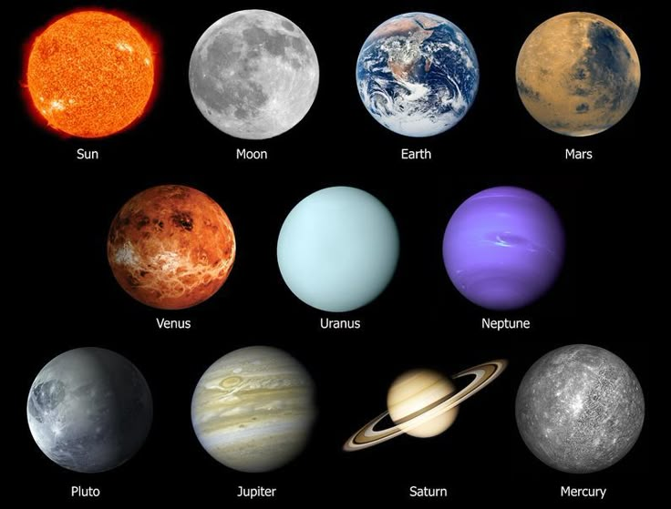

<!DOCTYPE html>
<html>
<head>
    <title>Step-by-Step Pages</title>
    <style>
        body {
            font-family: Arial, sans-serif;
            text-align: center;
            margin: 0;
            padding: 0;
            background: #f4f4f9;
        }
        .container {
            padding: 60px 20px;
        }
        h1, h2 {
            color: #000000;
        }
        p {
            color: black;
            font-size: 18px;
        }
        a.btn {
            display: inline-block;
            margin-top: 25px;
            text-decoration: none;
            background: #007BFF;
            color: white;
            padding: 12px 25px;
            border-radius: 8px;
            font-size: 16px;
            transition: background 0.3s ease;
        }
        a.btn:hover {
            background: #0056b3;
        }
        ul {
            list-style: none;
            padding: 0;
        }
        ul li {
            margin: 10px 0;
        }
    </style>
</head>
<body id="content">

<script>
    function loadPage(page) {
        let html = "";

        if (page === "first") {
            html = `
                <div class="container">
                    <h1>Welcome to My Space & Astronomy Mini Website</h1>
                    <p>This site is divided into 3 simple pages:<br>
                        Image Page<br>
                        Paragraph Page<br>
                        Links Page
                    </p>
                    <a href="#" class="btn" onclick="loadPage('image')">Start → Go to Image Page</a>
                </div>
            `;
        }
        else if (page === "image") {
            html = `
                <div class="container">
                    <h2>Image Page</h2>
                    
                    <br><br>
                    
                    <br><br>
                    
                    <br><br>
                    <a href="#" class="btn" onclick="loadPage('paragraph')">Next → Paragraph Page</a>
                </div>
            `;
        }
        else if (page === "paragraph") {
            html = `
                <div class="container">
                    <h2> Paragraph Page</h2>
                    <p>Astronomy is the scientific study of celestial objects, such as stars, planets, comets, and galaxies, 
                as well as phenomena that originate outside the Earth's atmosphere. It helps us understand the formation, 
                evolution, and structure of the universe. Through the use of telescopes, satellites, and space probes, 
                astronomers explore distant planets, observe galaxies, and study cosmic events like supernovae and black holes. 
                Learning astronomy not only satisfies human curiosity about the cosmos but also drives technological advancements 
                and inspires scientific thinking.</p>
                <a href="#" class="btn" onclick="loadPage('links')">Next → Links Page</a>
                </div>
            `;
        }
        else if (page === "links") {
            html = `
                <div class="container">
                    <h2>Links Page</h2>
                    <p>Here are some useful resources:</p>
                    <ul>
                        <li><a href="https://www.space.com" target="_blank">Space</a></li>
                        <li><a href="https://www.wikipedia.org" target="_blank">Wikipedia</a></li>
                        <li><a href="https://www.nasa.gov" target="_blank">NASA</a></li>
                    </ul>
                    <br>
                    <a href="#" class="btn" onclick="loadPage('first')">← Back to Home</a>
                </div>
            `;
        }

        document.getElementById("content").innerHTML = html;
    }

    // load main page first
    loadPage("first");
</script>

</body>
</html>
